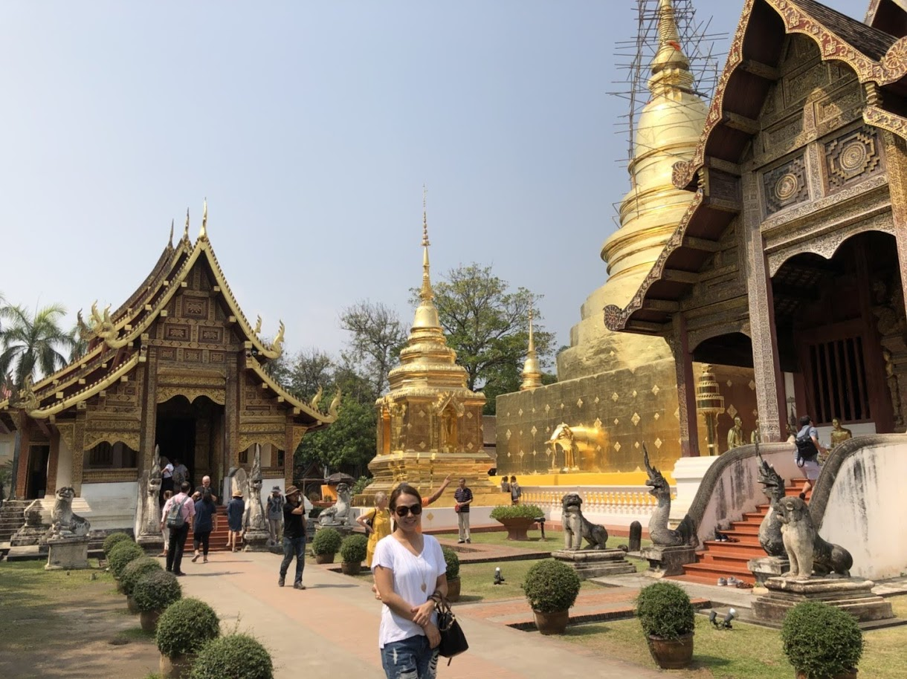
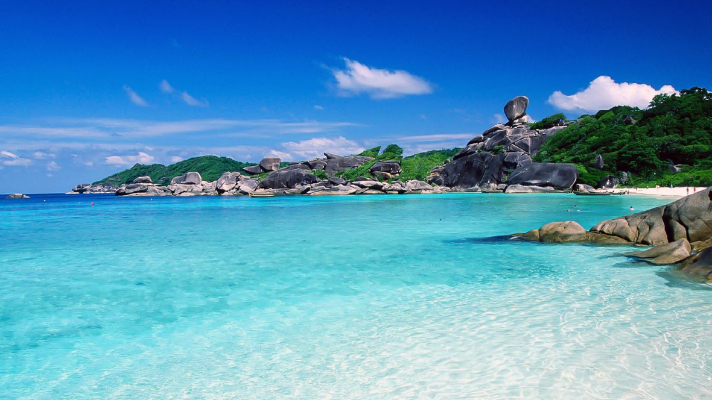

Chiang Mai, Thailand
Chiang Mai is one of my favorite places. I've been there several times. There are so many things you can do there: visiting buddhist temples, treking, wander at night markets, get a massage etc. Khao soi is one of the northern food that I had to eat every times I went there.

Similan Islands
Similan Islands is located in Phang Nga province in southern Thailand. I love how beautiful the beach was, the clear blue water and soft white sand. I spent a night in the island. Snorkeling and just relaxed on the beach.

"Similan Islands. Courtesey of "
scubadiving-phuket